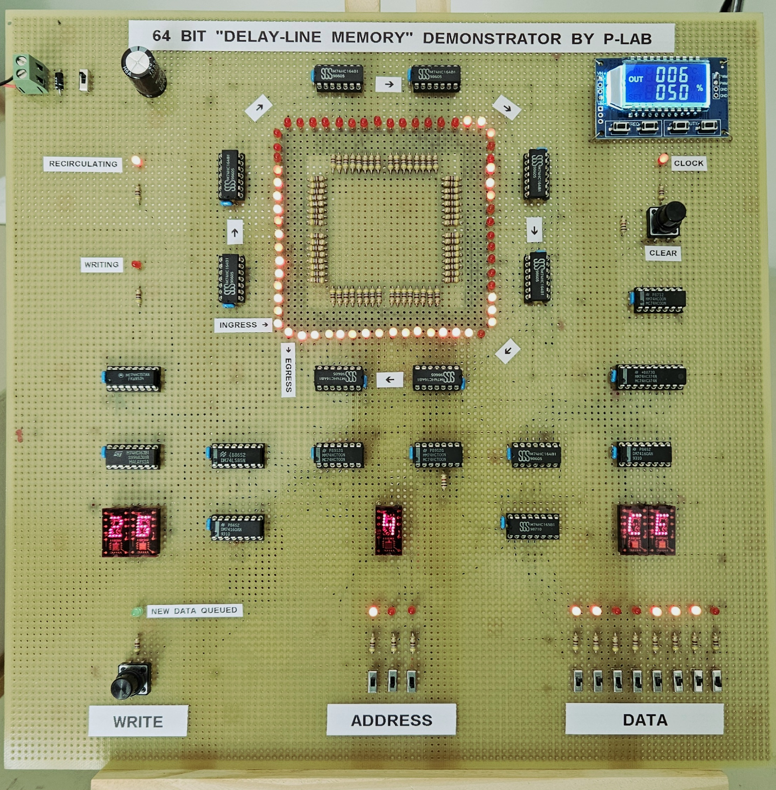
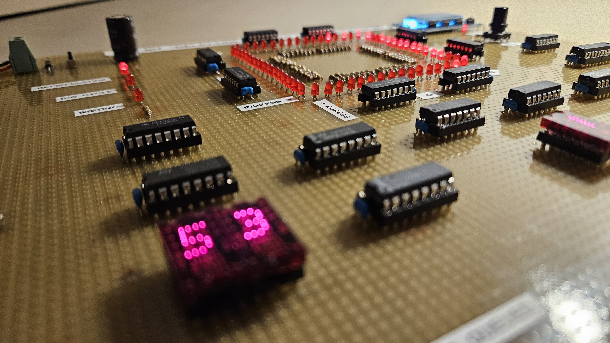
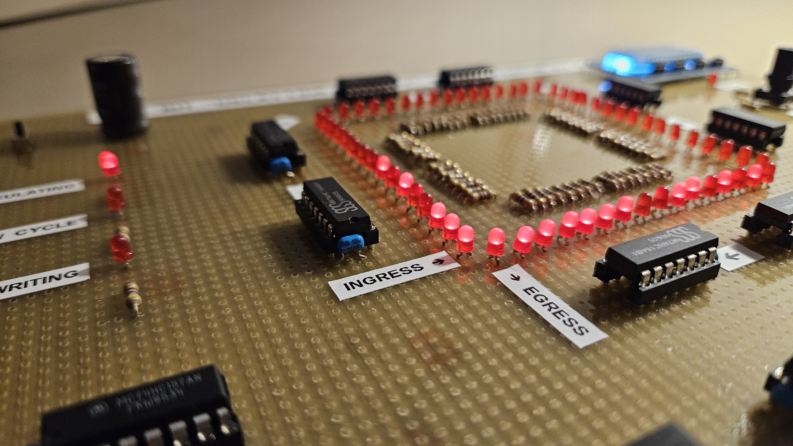

Delay-Line Memory Demo Board
  This Demo Board implements a Delay-Line Memory, using only standard TTL ICs.
Delay Line Memories belongs to the early stages of computer science and are now mostly obsolete.
They were used in iconic computers like Univac-I, Olivetti Programma 101 and others.
By using switches, buttons and LEDs, it is possible to visualize how bits are inserted, stored, recirculated and read back to hexadecimal displays.
The memory has a capacity of 8 words, each one capable of storing 8 bits. Therefore, the total storage capacity is 64 bits.
The fully adjustable "modern" clock generator supply clocks from 1 Hz to 150 kHz, to appreciate every single working stage.
Documents hosted here:
PROJECT DOCUMENTATIONSchematics [image/PNG]
Simulator File [dig]
External links:
Digital - A digital logic designer and circuit simulator
Official Video
This work is licensed under CC BY 4.0